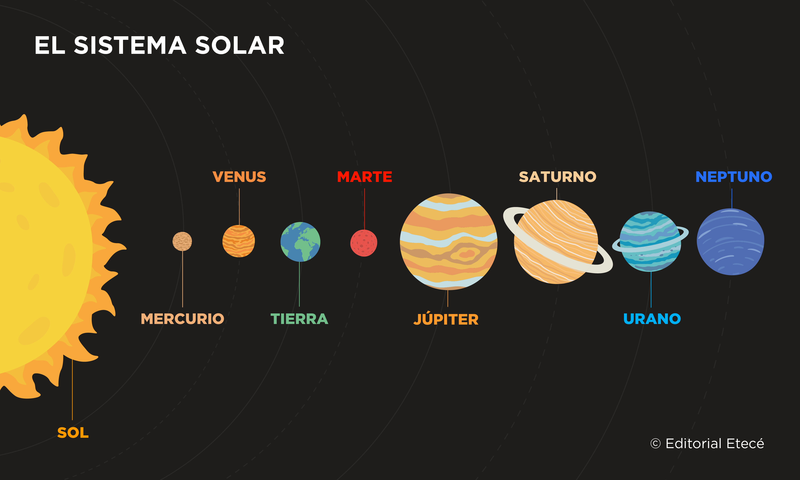

El sistema solar es un conjunto de cuerpos celestes que orbitan alrededor del Sol, que es una estrella ubicada en el centro. Este sistema incluye planetas, lunas, asteroides, cometas y otros objetos. Comprender los componentes del sistema solar y sus características es esencial para el estudio de la astronomía y la ciencia espacial. Desarrollo El Sol Descripción: El Sol es una estrella de tipo espectral G2V y el cuerpo celeste central del sistema solar. Es una esfera de plasma caliente que emite luz y calor a través de procesos de fusión nuclear en su núcleo.
Características: Composición: Principalmente hidrógeno (aproximadamente 74%) y helio (alrededor del 24%). Estructura: Tiene varias capas, incluyendo la corona, la fotosfera y el núcleo. Ejemplo: El Sol proporciona la luz y el calor necesarios para mantener la vida en la Tierra. Sus variaciones de actividad, como las manchas solares, pueden afectar el clima terrestre. Los Planetas Descripción: Los planetas son cuerpos celestes que orbitan alrededor del Sol y están clasificados en dos grupos principales: los planetas terrestres (rocosos) y los planetas gigantes (gaseosos).
Planetas Terrestres: Mercurio: El planeta más cercano al Sol, sin atmósfera significativa y con temperaturas extremas. Venus: Conocido por su densa atmósfera de dióxido de carbono y temperaturas muy altas. Tierra: El único planeta conocido con agua en estado líquido y vida. Marte: Conocido como el "planeta rojo" debido al óxido de hierro en su superficie. Planetas Gigantes: Júpiter: El planeta más grande del sistema solar, con una gran mancha roja que es una tormenta gigante. Saturno: Conocido por sus impresionantes anillos. Urano: Un planeta que rota de lado, con un color azul debido al metano en su atmósfera. Neptuno: El planeta más lejano, con un sistema de anillos tenue y una gran mancha oscura. Ejemplo: La Tierra y Marte tienen características que han llevado a comparaciones sobre la posibilidad de vida y habitabilidad en el pasado.